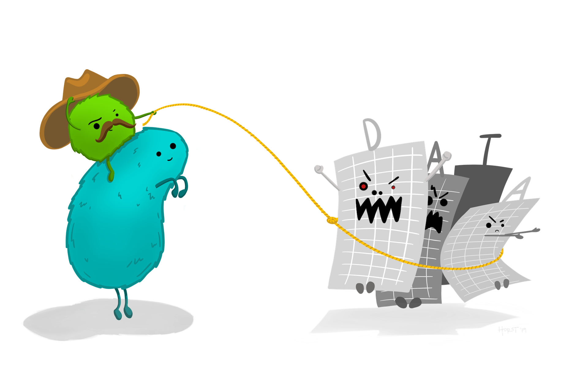

Introduction
Imagine you’ve been working on some analysis intermittently for a few weeks. Unless you’re very lucky, you’re likely to experience one or more of these common problems:
- As you work, you create various different files (for example containing the data you are using, code you have written and charts you have made) until it becomes difficult to keep track of what is in each file and how different files relate to each other.
- It becomes difficult to remember exactly what data and which code produced which chart, so that if someone has a question about how you came to a particular conclusion it is difficult to be sure. Likewise, if you discover a mistake in your code then it is hard to know what outputs it affected.
- If you need to take a break from your work (perhaps to work on something else) and come back to it later, it becomes irritating to have to close all the code and other files you are working on and then open them again later.
All of this can make data analysis much harder, especially if you’re trying to find a particular file or check if a result is correct just before a deadline.

Stats Illustrations by Allison Horst licensed under the Creative Commons Attribution licence.
Fortunately, we can solve these problems using a combination of the RStudio Projects feature and a plan for organising our files. Fortunately, once you’ve formed the habit of working in this way, it becomes second nature and you’ll find your work is both easier and produces more-reliable results.
RStudio Projects
Projects in RStudio are a way of keeping your analysis organised. When you work inside an project, RStudio will do various things in the background that make it easier to stay organised. For example, RStudio will save the project’s state: if you have to close the project and re-open it later, all the files that you had open before will re-open, too.
I strongly recommend that you use projects for everything you do in RStudio. To create a new project from within RStudio, click File then New Project … and choose to create the project in a new directory on your computer:

Choose to create a new (empty) project, rather than use any of the templates for specific types of projects:

Choose what the new project directory should be called, and where on your computer it should be created (you might want to create a ‘Crime Mapping’ directory to hold all the projects you will create during this course), then click Create Project:

Organising a project
Now you’ve created an empty project, you can create some directories within it to organise your files. There are lots of suggestions online for how to organise your files within a project – see this summary of project-organisation methods if you would like to understand the different options available – but the most important thing is that you have separate places to store:
- the original/raw data that you have obtained (e.g. by downloading it from a website or extracting it from a police database),
- the results of any data wrangling that you do,
- files containing the code that you use to wrangle the data and conduct your analysis, and finally
- the outputs from your analysis, including tables, charts and reports.
Putting each of these four types of files in a separate directory makes it much easier to keep track of them. We can create the necessary directories directly in R using the dir.create() function.
dir.create("source-data")
dir.create("analysis-data")
dir.create("code")
dir.create("outputs")Because we are running these commands from inside an RStudio project, these directories will automatically be created as subdirectories of the project directory we have already created – this saves a lot of moving between directories, and is another reason to use RStudio projects.
Typing out the dir.create() function four times is somewhat tedious, and certainly would be if we needed to create (say) 10 directories rather than four. One way to make this code shorter is to use the walk() function from the purrr package, which is part of the tidyverse suite of packages. walk() allows us to run any function several times, each time using a different input one at a time. The general format of calls to the walk() function is:
walk(vector_of_inputs, function_name_to_apply_to_those_inputs)So if we wanted to create the same four directories using walk(), we could:
library(tidyverse)
walk(c("source-data", "analysis-data", "code", "outputs"), dir.create)Note that the function name dir.create is not followed by a pair of parentheses when it is used inside walk().
walk() is a very powerful function and this is only a very simple example of what it can do, but we will return to it when we need it again.
Naming files
The final step in organising your work so that you can analyse data and stay sane is to give every file you create a name that will help you find it later on. To do this, stick to three principles:
- make your file names easily readable by computers,
- make your file names easily readable by humans, and
- use file names that will by-default by sorted in a meaningful way.
Computers can increasingly read file names that contain any characters you can think of – some systems might even allow file names containing emojis 🤷 – but many different characters make referencing your file names in your code more difficult than need be. To keep your code simple, stick to files names that contain only lowercase letters (so you don’t have to remember if each letter is uppercase or lowercase), numbers, hyphens (-) and underscores (_) – that’s it. If your language uses letters with accents, its best to not use those accents in file names. So, instead of having files with names like this:
John's raw data.csv
figure 4.jpg
DüsseldorfCrimeData.xlsxuse the names:
john_raw_data.csv
figure_4.jpg
dusseldorf_crime_data.xlsx
To make your files easily readable by humans, make sure the file name describes what the file contains or does. So giving a file the name crime_data_atlanta_2020.csv is much more useful than calling the same file data_file_23.csv. If you’ve been using computers for a while (or you’ve been taught by someone who has), you may have been trained to use very short file names because old computers could only handle very short names. Fortunately, modern computers can handle much longer file names, so it’s generally safe to use a few extra characters to describe what your file is or does. File names are also easier to read if words are separated by a hyphen or underscore: police_recorded_robbery_data_2020 is much easier to read than policerecordedrobberydata2020.
If your files have a meaningful order, it’s useful to reflect this in the file name. Imagine you have three code files: one for data wrangling, one for carrying out spatial analysis tasks on that wrangled data and a third one for creating charts to show the results of the analysis. You cannot run the analysis code until the data wrangling is complete, so the files have a meaningful order.
When you look at these files in the Windows File Explorer, Mac Finder or RStudio Files tab, they are likely to appear out of order. For example, they might be:
analyse_data.R
create_charts.R
wrangle_data.RIf you add a number to the start of the file name to show which order to use the files in, things become clearer:
01_wrangle_data.R
02_analyse_data.R
03_create_charts.RNote that the numbers are padded with a zero so that they will still be sorted in the correct order if you end up with more than 10 files in my workflow (I’ve only used one zero for padding because I don’t expect to have more than 100 files).
In summary
In this section we’ve learned how to stay organised while mapping crime. Following the rules outlined here might seem troublesome or unnecessary now, but they’ll make things much easier when you’re up against a deadline.
If you’d like more information about these topics, you might be interested in:
- Chapter 8: Workflow projects in R for Data Science introduces RStudio projects and gives more detail about the benefits of using them.
- Naming Things by Jenny Bryan talks through good practice for naming files in more detail.
- Projects in RStudio a 40-minute webinar given by Garrett Grolemund.
‘File Organization: Naming’ by Data Carpentry licensed under the Creative Commons Attribution licence and the XKCD.com comic ‘Documents’ licensed under the Creative Commons Attribution-NonCommercial license.